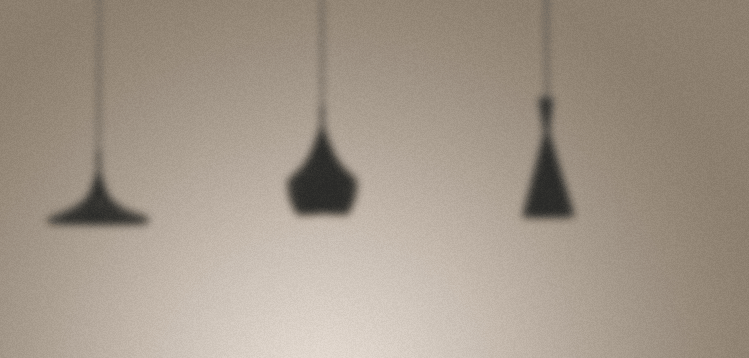

<!--
  Generated template for the MenuPage page.

  See http://ionicframework.com/docs/components/#navigation for more info on
  Ionic pages and navigation.
-->

<ion-content>
  <div class="header">
    
    
    <p>土方桔桔桔</p>
  </div>
  <ion-grid>
    <div><span>我的订单<a>查看全部订单 ></a></span></div>
    <ion-row>
      <ion-col col-4>
        <div style="background-color:#ffdb2c;">
          <ion-icon name="create"></ion-icon><br>
          <p>我的发布</p>
      </div>
      </ion-col>
      <ion-col col-4>
        <div>
          <ion-icon name="star"></ion-icon><br>
          <p>我的收藏</p>
        </div>
      </ion-col>
      <ion-col col-4>
        <div>
          <ion-icon name="eye"></ion-icon><br>
          <p>我的关注</p>
        </div>
      </ion-col>
      <ion-col col-6>
        <div>
          <ion-icon name="cart"></ion-icon><br>
          <p>购物车</p>
        </div>
      </ion-col>
      <ion-col col-6>
        <div>
          <ion-icon name="pin"></ion-icon><br>
          <p>收货地址</p>
        </div>
      </ion-col>
      <ion-col col-6>
        <div>
          <ion-icon name="card"></ion-icon><br>
          <p>优惠券</p>
        </div>
      </ion-col>
      <ion-col col-6>
        <div>
          <ion-icon name="headset"></ion-icon><br>
          <p>在线客服</p>
        </div>
      </ion-col>
      <ion-col col-6>
        <div>
          <ion-icon name="mail"></ion-icon><br>
          <p>我的消息</p>
        </div>
      </ion-col>
      <ion-col col-6 (click)="goSub()">  
        <div>     
          <ion-icon name="settings"></ion-icon><br>
          <p>设置</p>
        </div>   
      </ion-col>
    </ion-row>
  </ion-grid>
    <!-- <div class="box">
        <ion-item>
          <ion-icon name="ios-phone-portrait" item-start></ion-icon>
          <ion-input type="number" placeholder="手机号"></ion-input>
        </ion-item>
        <ion-item no-padding>
          <ion-icon name="ios-phone-portrait" item-start></ion-icon>
          <ion-input type="text" placeholder="验证码"></ion-input>
          <button style="width:100px;height:100%;float:right;margin:0;" item-end>倒计时30s</button>
        </ion-item>
        <ion-item>
          <ion-icon name="ios-phone-portrait" item-start></ion-icon>
          <ion-input type="password" placeholder="密码"></ion-input>
        </ion-item>
        <button ion-button block color="mycolor">注册</button>
        <p>已有账号？立即登录</p>
      </div> -->
</ion-content>
